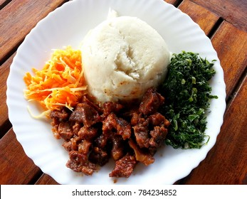

Classic Ugali
Home

Ugali is a staple East African dish made from maize flour and water. It's simple, filling, and best enjoyed with vegetables, meat, or beans
Ingredients
- 2 cups maize flour
- 4 cups water
Cooking Instructions
- Bring the water to a boil in a pot
- Slowly add maize flour while stirring continuously to avoid lumps
- Keep stirring until the mixture thickens and starts pulling away from the sides of the pot
- Cover and let cook for 3-5 more minutes on low heat
- Stir again, then turn off the heat. Shape into a round mound and serve warm